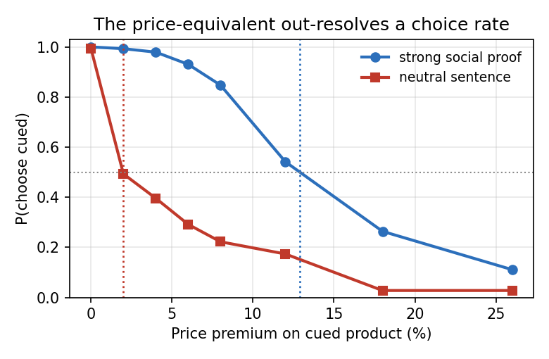
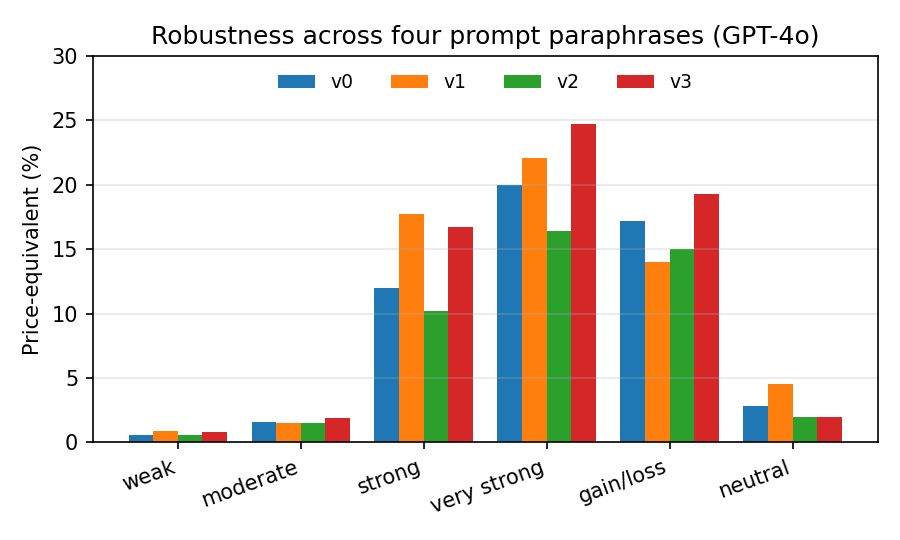

卖家在商品页写的「权威背书 / 稀缺 / 社会证明」等话术，会不会让 AI 购物代理改主意？只看同等价格下谁被选中，六种 cue 都能做到 ≥95% 胜率，彼此分不开；把 cue 商品的价格一层层抬高，直到选择率回到五五开，换算出的「隐性加价」却从约 1.6% 拉到 21.4%。作者把这种价格等价（price-equivalent, PE）当作审计尺度，在配对商品、位置对消和 0–26% 八档溢价扫线上，给每条 cue 画出可比较的强度曲线。同等价的选择率会把强弱 cue 糊成一片，换成愿意多付多少钱才能分开。
1. 问题：选择率测不出 cue 有多贵
购物代理文献已经证明标题、图片、顺序和文案都能撬动选择，但多数报告的是同等价格下的胜率或完成率。强 cue 会把选择率顶到接近 100%，彼此无法区分；首项位置偏差在对消后平均约 50%，看起来又像无偏好。作者要的是一条共同刻度：这条话术相当于把标价抬了百分之几，代理才重新和对照商品打平。

2. 方法：配对商品上的价格等价审计
协议把每次试验做成二选一：一侧挂 cue 文案，一侧不挂；cue 侧价格按 0%、2%、4%、6%、8%、12%、18%、26% 八档抬高（细扫靠近 0，因多数交叉落在低溢价区；26% 是经验上界，再高也加不到新的交叉信息）。商品对来自咖啡机等品类，每类 6 对。位置对消：cue 商品轮流放左右，避免 primacy。对每条 cue，用选择率对溢价拟合，读出与 50% 相交的价格等价；交叉落在窗外的记为右删失下界。95% 区间用按商品对重采样的非参数 bootstrap。
具体走查（示意数字）：假设无 cue 时两款咖啡机五五开；加上「权威认证」cue 后，零溢价选择率升到 97%。把 cue 侧价格依次加到 8%、12%、18%，选择率从约 80% 降到 55% 再降到 40%，用插值读出与 50% 相交的溢价，即该 cue 的 PE。若曲线在 26% 仍高于 50%，只报告「≥26%」下界，不外推。
作者同时跑无 cue 的价格敏感曲线，作为解读 PE 的参照——同一 PE 在不同模型上可能对应不同的价格弹性，因此他们报告的是 cue–价格剖面，而不是强行排一个跨模型总分。

3. 核心贡献：把话术强度写成「等价加价」
六种 cue 在零溢价下都被选中 ≥95%，按选择率无法排序；换成 PE 后拉开到约 1.6%–21.4%。更关键的是，同等价排序偶尔会和 PE 排序相反——选择率冠军不一定是「最贵」的话术。作者把 PE 读成审计量：平台若要限制卖家话术，可以按等价加价设阈值，而不是按黑盒胜率一刀切。审计目标应从「会不会被选」换成「等价于加了多少价」。
4. 实验：多模型与刺激设置
实验覆盖多款前沿聊天模型（含 GPT-4o 等；部分小模型因不稳定被排除）。刺激是成对商品卡，cue 句子覆盖权威、稀缺、社会证明等经典影响渠道，完整列表在附录。价格扫与位置对消交叉后，强 cue 的交叉多落在约 13%–22% 溢价附近。作者还对照了相关工作：合成录取任务里，拒绝框架 vs 录取框架能把录取率从 37.5% 拉到 78.0%（差 40.5 个百分点），说明框架敏感是普遍现象；本文把价格显式写进同一试验，避免「cue 实验」和「价格实验」分开再线性外推。
与「先测 cue、再测价格、最后线性插值」的并发工作相比，本文把 cue 与价格放进同一次二选一，避免两套实验的尺度错位。位置对消后，primacy 不再伪装成 cue 效应；作者在附录给出完整 cue 句库，方便复现审计而不是只复现结论数字。
主结果表（概念汇总，数字来自正文）：
| 度量 | 观察 |
|---|---|
| 零溢价选择率 | 六种 cue 均 ≥95%，彼此不可分 |
| PE 范围 | 约 1.6%–21.4% |
| 溢价网格 | 0–26%，8 档 |
| 交叉常见区 | 约 13%–22% |
5. 局限
作者强调：PE 必须和价格敏感曲线一起读，不能跨模型单排行；26% 上界是经验括号，不是理论常数；刺激来自有限品类，迁移到服饰或数码配件要重标定。代理是否代表真人购物者，本文不做因果断言。
6. 实践意义
一是做 AI 购物 / 导购评测时，补一条价格扫：报 PE 比只报 CTR 或胜率更可比较。二是平台治理卖家生成文案时，可以用 PE 阈值做分级（例如超过某等价加价必须披露），而不是等选择率饱和后再事后追责。三是模型侧若要做抗操纵，应用 PE 剖面做回归测试：换一轮系统提示之后，同一 cue 的等价加价是否明显上升。